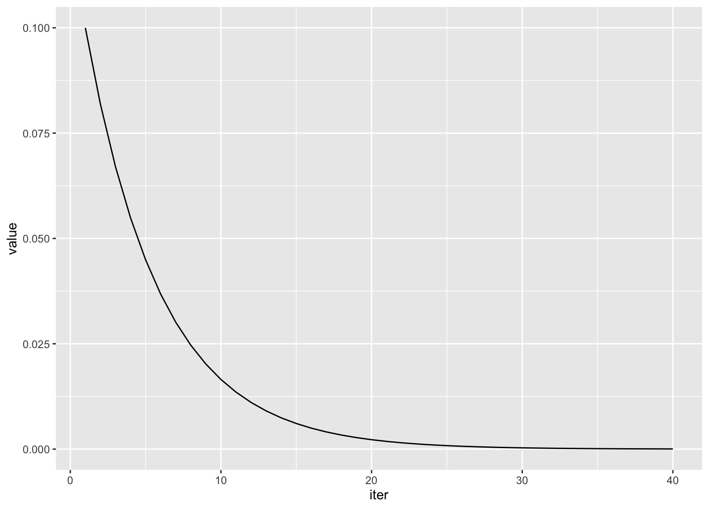

expo_decay.Rdexpo_decay() can be used to increase or decrease a function exponentially
over iterations. This can be used to dynamically set parameters for
acquisition functions as iterations of Bayesian optimization proceed.
expo_decay(iter, start_val, limit_val, slope = 1/5)
| iter | An integer for the current iteration number. |
|---|---|
| start_val | The number returned for the first iteration. |
| limit_val | The number that the process converges to over iterations. |
| slope | A coefficient for the exponent to control the rate of decay. The sign of the slope controls the direction of decay. |
A single numeric value.
Note that, when used with the acquisition functions in tune() a wrapper
would be required since only the first argument would be evaluated during
tuning.
#> #>#> #> #>library(ggplot2) library(dplyr) tibble( iter = 1:40, value = map_dbl( 1:40, expo_decay, start_val = .1, limit_val = 0, slope = 1 / 5 ) ) %>% ggplot(aes(x = iter, y =value)) + geom_path()